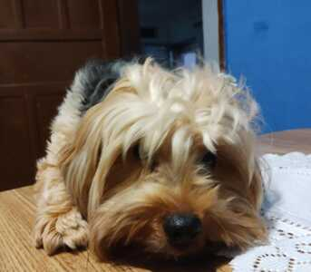
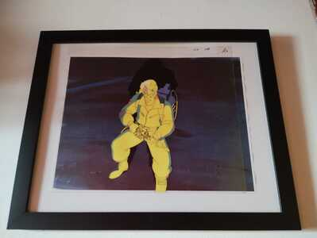
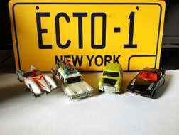
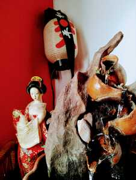
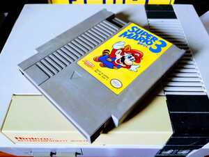

Hobbies e Interesses
Depois do curso, só tenho tempo para ser mordida pela Luna.
Minhas paixões são os anos 1980, arte, ciência e espiritualidade, além das nerdices. Uma das minhas franquias favoritas é Ghostbusters, e tenho alguns colecionáveis.
 Também amo a cultura japonesa, desde animes, mangás, tokusatsus e J-Music at[e práticas espirituais como reiki. Cheguei a estudar Japonês na adolescência, mas atualmente mais enrolo do que falo.
Outro vício: tecnologias antigas, especialmente videogames. O objeto que melhor traduz isso é o cartucho original de Super Mario Bros. 3 para NES (Nintendo Entertainment System), ou Nintendinho, como ficou conhecido no Brasil.
Minhas práticas espirituais vão desde variadas religiões at[e a parapsicologia, uma paixão antiga. Gosto de meditar, fazer rituais de proteção e prosperidade, ler sobre astrologia, consultar leituras de tarô, ou simplesmente tentar desvendar os fenômenos metafísicos que estão na família desde o meu bisavô.
Algo que começou como curiosidade e se tornou uma espécie de missão, é a ciência. Longe de ser especialista de qualquer coisa, comecei a estudar minha própria doença após uma internação em 2014. Trocando ideias com outros pacientes, tirando dúvidas com médicos, lendo artigos científicos (e observando minha própria experiência), ganhei muito mais conhecimento do que imaginava. Chegou a tal ponto que meus médicos me orientaram a criar um canal para divulgar esses conhecimentos. O canal do YouTube se expandiu para um canal no TikTok, mas hoje estão desatualizados, já que passo muito tempo pesquisando e revisando matéria para a produção dos vídeos. Um dia eu continuo a missão...